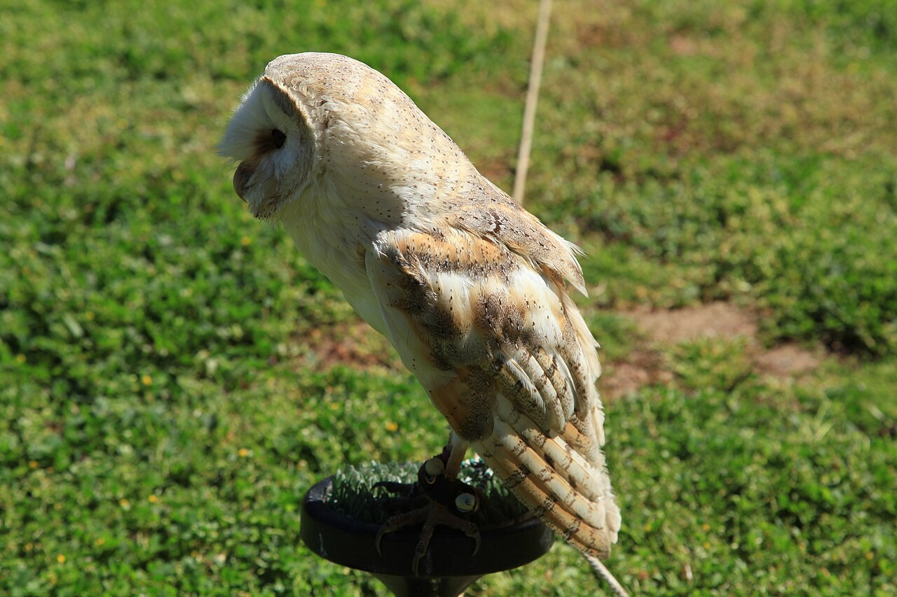

Resources → Gear & Equipment
Mews Materials & Builds
The mews is your raptor's home — a secure, weather-protected enclosure where the bird is housed when not being flown. Federal and state regulations specify minimum mews requirements, and your mews must pass an inspection before you can obtain your falconry permit. Building a good mews is one of the largest upfront investments in falconry, but a well-designed enclosure pays for itself in bird health and safety for years to come.
What Is a Mews?
The term "mews" comes from the Old French word "mue," meaning to molt, because medieval falconers originally used these enclosures to house birds during their annual molt. In modern falconry, the mews serves as the bird's permanent housing: a secure structure that protects the raptor from weather, predators, and disturbance while providing adequate space, ventilation, and light.
A mews can range from a converted garden shed or garage bay to a purpose-built structure designed specifically for raptors. What matters is not the aesthetic quality of the structure but its functionality: Does it keep the bird safe? Does it meet legal requirements? Does it provide an appropriate environment for the species being housed?
Most falconers house their birds in one of two ways: tethered to a perch inside the mews (the traditional approach) or free-lofted in a larger enclosure where the bird can fly short distances. Tethered mews are smaller and simpler to build. Free-loft mews require more space and more careful interior design but give the bird more freedom of movement and are preferred for some species.
Legal Requirements
Federal regulations under 50 CFR 21.29 and individual state wildlife agency rules specify minimum mews standards. These requirements must be met before your state wildlife officer will approve your facility and issue your falconry permit. While specific requirements vary by state, the following are typical minimums:
- Size: The mews must be large enough for the bird to fully extend its wings without touching the walls. Federal minimums are typically at least 8 feet by 8 feet for a tethered hawk, with larger dimensions required for free-loft housing. Many states require a minimum of 64 square feet of floor space per bird.
- Height: A minimum ceiling height of 6 to 7 feet is standard, allowing the falconer to enter and move comfortably while servicing the bird.
- Security: The mews must be predator-proof, preventing entry by raccoons, opossums, cats, dogs, and other animals that could injure or stress the bird. All windows and ventilation openings must be covered with hardware cloth (welded wire mesh) of 1/2-inch or smaller mesh size. Doors must latch securely.
- Ventilation: Adequate airflow must be provided to prevent the buildup of ammonia from droppings and to regulate temperature. At least one ventilation opening, screened with hardware cloth, is typically required.
- Protection from weather: The bird must be able to shelter from direct sun, rain, wind, and extreme temperatures. The mews must have a solid roof and at least three solid walls.
- Perch: An appropriate perch for the species must be installed. The leash must allow the bird to reach food and water without tangling.
- Water: A bathing pan must be available, either inside the mews or in an attached weathering yard.
Contact your state wildlife agency for the specific mews requirements in your jurisdiction. Some states have additional requirements beyond federal minimums, such as double-entry doors (an airlock-style vestibule), specific window placement, or drainage standards.
Design Considerations
Beyond meeting legal minimums, a well-designed mews accounts for several practical factors:
- Orientation: Position the mews so the main window or open wall faces south or southeast (in the Northern Hemisphere). This provides morning sun, which raptors benefit from for thermoregulation and vitamin D synthesis, while avoiding harsh afternoon sun that can overheat the enclosure.
- Sight lines: The bird should be able to see outdoors through at least one window or opening. Visual access to the outside environment reduces stress and boredom. However, the bird should not be able to see pedestrian traffic, loose dogs, or other animals that would cause constant alarming and bating.
- Access: Design the door so you can enter carrying equipment (a perch, bath pan, or the bird on your fist) without ducking, turning sideways, or fumbling with the latch. A door that opens inward gives you control over the opening and prevents the bird from escaping past you. A double-door vestibule (airlock) is the safest design and is required in some states.
- Cleaning: The floor should be easy to clean. Pea gravel, sand, or smooth concrete are common choices. Avoid bare wood flooring, which absorbs moisture and mutes and is impossible to sanitize. Some falconers install a slight floor slope toward a drainage point for easy hosing.
- Lighting: Natural light is important for the bird's circadian rhythm and feather condition. Windows should provide daylight without allowing direct sun to hit the perching area for extended periods, which can cause overheating. The window should be recessed or covered with an awning to control direct sunlight.
Ventilation
Proper ventilation is critical. Raptor mutes (droppings) produce ammonia as they decompose, and poor ventilation allows ammonia to concentrate at levels that damage the bird's respiratory system. Additionally, a poorly ventilated mews traps heat in summer and moisture in winter, creating conditions that promote mold growth and respiratory infections.
The most effective ventilation design uses the stack effect: low intake vents near the floor and high exhaust vents near the roofline. Cool air enters through the lower vents, warms as it rises (carrying ammonia and moisture with it), and exits through the upper vents. This passive airflow requires no fans or mechanical systems and operates continuously.
All ventilation openings must be covered with hardware cloth to prevent predator entry and escape. Use 1/2-inch mesh or smaller. Ensure that vent placement does not create direct drafts across the perching area, especially in cold climates where a draft can chill a wet or recently bathed bird.
In hot climates, consider supplementing passive ventilation with a small exhaust fan on a thermostat that activates when interior temperature exceeds a set point. In cold climates, adjustable vent covers allow you to reduce airflow during the coldest months without eliminating it entirely.
Materials and Construction
A functional mews can be built from a range of materials. The structure must be sturdy enough to withstand weather and resist predator intrusion:
- Framing: Standard 2x4 or 2x6 lumber framing is adequate for most mews. Pressure-treated lumber should be used for any components that contact the ground. Metal stud framing is an alternative for humid climates where wood rot is a concern.
- Walls: Plywood (3/4-inch exterior grade) or oriented strand board (OSB) sheathed with exterior siding material. Interior walls should be smooth so the bird cannot catch feathers on splinters or rough surfaces. Some falconers line interior walls with FRP (fiberglass reinforced panels) for a smooth, washable surface.
- Roof: Metal roofing panels are durable, lightweight, and shed water effectively. Asphalt shingles on plywood sheathing is an alternative. The roof should have sufficient overhang to keep rain away from ventilation openings and the weathering yard entrance.
- Hardware cloth: Use 1/2-inch welded wire mesh (hardware cloth) over all window and ventilation openings. Chicken wire is not acceptable because raccoons and other predators can tear through it. Attach hardware cloth with screws and washers rather than staples for a more secure bond.
- Door hardware: Use a latch that requires deliberate human action to open, such as a barrel bolt or carabiner clip. Raccoons can open simple hook latches and many gate latches. Some falconers add a padlock for additional security and to prevent unauthorized entry.
- Flooring: Pea gravel (2 to 4 inches deep) over landscape fabric is the easiest floor to maintain. It drains well, does not harbor bacteria when raked regularly, and is inexpensive to replace. Concrete is more permanent and easier to hose clean but can be slippery when wet and cold on the bird's feet if it steps down from the perch.
The Weathering Yard
A weathering yard is an outdoor area attached to or adjacent to the mews where the bird is placed during the day for sunning, bathing, and fresh air. While not always legally required, a weathering yard is strongly recommended and considered standard practice.
The weathering yard should be enclosed on top and sides with hardware cloth or netting to prevent escape and protect against aerial predators (great horned owls, which are active at dawn and dusk, are a particular risk). The enclosure should provide both sun and shade, with at least one area where the bird can be in full sunlight and another where it can retreat to shade.
A bath pan should be placed in the weathering yard and filled with clean water daily. Raptors bathe regularly and access to bathing water is essential for feather maintenance. The pan should be shallow enough that the bird can stand in it comfortably (2 to 4 inches of water depth for most hawks) and heavy enough that the bird cannot tip it over.
Cost Breakdown
Mews construction costs vary widely depending on materials, size, and whether you build it yourself or hire a contractor:
- Budget build ($500 – $1,000): Converted garden shed or repurposed small outbuilding. Basic modifications include adding hardware cloth over windows, installing a proper door latch, adding ventilation, and installing a perch. This is the most common approach for first-time apprentice falconers.
- Mid-range build ($1,000 – $2,500): Purpose-built mews using standard lumber framing, plywood walls, and metal roofing. Includes proper ventilation, an attached weathering yard, and a concrete or gravel floor. This is the sweet spot for most serious falconers.
- Premium build ($2,500 – $5,000+): Custom-designed structure with FRP-lined interior walls, insulated walls and roof for extreme climates, double-entry vestibule, built-in drainage, and a large enclosed weathering yard. May include electrical for lighting and exhaust fans.
The biggest cost savings come from doing the work yourself. A mews that would cost $3,000 to $5,000 with a contractor can often be built for $1,000 to $1,500 in materials if you have basic carpentry skills and tools. Many falconry clubs have members who have built multiple mews and are willing to help newcomers with design advice and even construction assistance.
Top Picks
Galvanized welded wire mesh for mews windows, ventilation openings, and weathering yard enclosure. 1/2-inch mesh prevents predator entry. Available in rolls for covering large areas.
Raccoon-proof barrel bolt latch with padlock hasp for mews door security. Stainless steel construction resists corrosion. Secure enough to meet state wildlife inspection standards.
Short-pile outdoor artificial turf for perch covers, shelf perch surfaces, and mews flooring sections. UV-resistant, drains quickly, and provides comfortable footing for raptors.
Heavy-duty knotted nylon netting for enclosing weathering yard overhead. UV-stabilized for outdoor use. Prevents escape and protects against aerial predators including owls.
Browse Mews Builders & Suppliers
Find verified dealers offering mews materials, pre-built mews kits, and construction services.
Browse SuppliersList Your Products
Sell mews materials, kits, or construction services? Reach falconers building their first facility.
Submit Your Listing